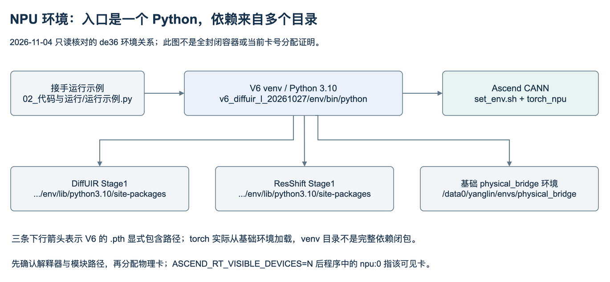

服务器环境与运行步骤
本指南面向继续使用现有de36资产。迁到另一台机器还需要补齐第三方依赖、数据、模型权重和关联环境，不能只下载本仓库就完整复现。所有新输出写入新目录；旧训练已结束，旧控制器不作为当前运行入口。
1. 登录、路径与账号
2026-11-04实际只读连接确认：主机liteserver-de36，SSH登录用户root；项目研究身份/目录为yanglin。本机SSH别名解析为root@121.37.80.217:22。接手者需要由项目负责人提供自己的授权登录方式；这里不包含密码、私钥或token。
# 在接手者电脑；已有相应SSH别名时
ssh liteserver-de36
# 无别名时，取得相应登录权限后使用
ssh root@121.37.80.217
登录后先hostname确认de36，再看以下入口：
先取得本次完整交接ZIP，解压后将整个交接目录复制到服务器的新目录（例如/data2/yanglin/receiver_handoff）；不要只拷贝HTML。也可以直接克隆公开GitHub仓库：
git clone https://github.com/mayday4yl/turbulence-project-handoff.git /data2/yanglin/receiver_handoff
cd /data2/yanglin/receiver_handoff
# 确认取得会议补充版本：应存在 02_代码与运行/运行示例.py
python3 "02_代码与运行/核对文件.py"
python3 "02_代码与运行/运行示例.py" inspect
如果仓库已存在，不重复clone；把下文HANDOFF_REPO改成真实clone路径。inspect仅用stdlib读取小型配置并核对实际依赖：模拟器vendor与canonical配置、UniDB源码清单/官方权重记录及载荷、验证manifest首个样本和各强度文件；不导入torch、不占卡。可通过--checkpoint和--checkpoint-sha256一并核对选定权重路径。本次包含U67180时检查38个不同文件，见补强后的实测。预期status: PASS、errors: []且所有路径true。
这个PASS只代表文件存在和小型元数据结构通过；不等于大文件SHA、完整数据集、Python包导入或NPU兼容性通过。模型运行时继续执行既有SHA和严格加载检查；metadata中的绝对路径不会随--project-root自动改写。
2. 环境不是一个独立conda包

V6的v6_readonly_dependencies.pth包含：
/data2/yanglin/v5_diffuir_l_stage1_20261026/env/lib/python3.10/site-packages
/data2/yanglin/v5_resshift_stage1_20261026/env/lib/python3.10/site-packages
/data0/yanglin/envs/physical_bridge/lib/python3.10/site-packages
不要删除这几个旧环境。无需在共享环境pip install -U。历史UniDB run_env.sh还设置OMP/BLAS=2、TASK_QUEUE_ENABLE=0、私有cache、TORCH_HOME；示例复制所需配置到新输出目录，不调用原controller。
export HANDOFF_REPO=/data2/yanglin/receiver_handoff
export HANDOFF_PY=/data2/yanglin/v6_diffuir_l_20261027/env/bin/python
export PYTHONDONTWRITEBYTECODE=1
export TORCH_DEVICE_BACKEND_AUTOLOAD=0
export OMP_NUM_THREADS=2
export OPENBLAS_NUM_THREADS=2
export MKL_NUM_THREADS=2
"$HANDOFF_PY" -c 'import sys,torch,numpy; print(sys.executable); print(torch.__version__,torch.__file__); print(numpy.__version__)'
TORCH_DEVICE_BACKEND_AUTOLOAD=0用于避免CPU检查自动导入NPU扩展；NPU示例会显式import torch_npu。示例输出目录必须不存在，这可避免覆盖旧实验。以下run01若用过就换run02。
3. 先跑CPU模拟器示例
"$HANDOFF_PY" "$HANDOFF_REPO/02_代码与运行/运行示例.py" simulator \
--device cpu --backward \
--out /data2/yanglin/receiver_checks/simulator_cpu_run01
预期：RESULT.json、clean及g=0/.5/1/2/3/4 PNG/NPY、g4 blur-only、像素位移数组。g=0 max误差≤2e-5；g2的C/ξz/ξtilt梯度有限且非零。本次服务器实测约19.4秒，见CPU记录，实际耗时随主机变化。
这是256×256合成坡度/棋盘图，一次小规模检查；没有正式训练、数据集生成或有限差分全Gate。PNG clip到[0,1]仅用于显示；原NPY保持浮点。
4. 在分配到的NPU上运行
先确认实时空闲与归属；旧报告的0—7卡不代表今天仍预留。npu-smi info和设备PID都要看，不能只看HBM余量。本次示例避开1号外部服务；不停止任何其他任务。实际环境快照见包与依赖来源。
npu-smi info
# 示例：项目负责人已分配物理卡0且现场无其他占用后
fuser /dev/davinci0
source /usr/local/Ascend/ascend-toolkit/set_env.sh
"$HANDOFF_PY" "$HANDOFF_REPO/02_代码与运行/运行示例.py" simulator \
--device npu --physical-card 0 --confirm-card-is-allocated --backward \
--out /data2/yanglin/receiver_checks/simulator_npu_run01
--confirm-card-is-allocated是运行者完成资源确认的显式标记，脚本不会替代调度器，也不会kill外来进程。设备被ASCEND_RT_VISIBLE_DEVICES=0限制后，代码内使用npu:0；若分配物理3，传--physical-card 3，代码内仍是可见设备0。
本次NPU多强度前向、g=0端点和g2的一阶反向已通过，耗时约450秒，首次运行包含算子编译等待；见实际记录。后续耗时取决于缓存与资源。
FP32、HF32关闭、JIT关闭沿用项目数值设置。UniDB在NPU还应用0.5*x*(1+erf(x/sqrt(2)))等价精确GELU，不能删除这个兼容修复后仍称同一已验路径。
5. 跑当前UniDB：严格加载，再恢复
先固定权重身份。原路线best/latest U67180的完整checkpoint：
export HANDOFF_CKPT=/data2/yanglin/unidb_dual_20261104_until00/runs/original/checkpoints/U00067180.pt
export HANDOFF_SHA=0381ae3435d2939a2b8b4fbc215c3f78ac6c3775f254bead31dee3e9cdb78e98
"$HANDOFF_PY" "$HANDOFF_REPO/02_代码与运行/运行示例.py" unidb \
--device cpu --action forward --weights EMA \
--checkpoint "$HANDOFF_CKPT" --checkpoint-sha256 "$HANDOFF_SHA" \
--out /data2/yanglin/receiver_checks/unidb_cpu_run01
该步骤核官方载荷和当前checkpoint SHA，严格加载EMA，然后在固定val首个样本G4做1次UNet前向。输出noise不是恢复图。本次CPU34.1秒通过；不把该检查的数值当正式恢复指标。
获得空闲卡后，完整100步示例为：
"$HANDOFF_PY" "$HANDOFF_REPO/02_代码与运行/运行示例.py" unidb \
--device npu --physical-card 0 --confirm-card-is-allocated \
--action restore --weights EMA --g 4 \
--checkpoint "$HANDOFF_CKPT" --checkpoint-sha256 "$HANDOFF_SHA" \
--out /data2/yanglin/receiver_checks/unidb_restore_run01
本次在物理0卡、G4/EMA/U67180上实际跑完100步，约22.9秒；见运行记录。
预期RESULT.json的nfe=100，另有input/clean/prediction的原float数组与显示PNG。示例B1随机流不同于正式每source四实现的B4评价，不保证逐像素复现原表；要复算正式指标必须使用原validation.py的组seed、人口、RAW/EMA、100步SDE、原float RGB/no clip/crop/resize协议。该模块依赖HCCL，不适合直接以普通单进程调用。
省略--checkpoint会明确使用官方SR初始化，而不是自动找latest。完整项目checkpoint含NumPy RNG等对象；脚本只在明确给定且SHA匹配后以weights_only=False读取，不能用于来源不明的模型。
其他最终角色见权重登记：改进latest U40848、改进best U10000；RAW键为network，EMA键为ema.network。恢复图展示用EMA不等于完整续训。
6. 后续训练需要怎样适配
现有历史worker是可读的完整训练实现，但不是今天可以原命令直接重启的通用训练器。 它绑定2026-11-04截止、原root、固定卡数、源SHA与旧STOP。只删除STOP或改一个日期会破坏身份/恢复约束。
准备一个新run时逐项执行：
- 选定目标：复现、续训或实现新consistency；给新目录与预算，保留原目录只读。
- 从选定完整状态加载
network / optimizer / ema / RNG / loader_generator / cursor / counts / scheduler，明确是否改变world size或数据顺序。只加载EMA是新初始化，不叫无缝resume。
- 在新副本里集中更新
ROOT、资源、截止、source/authority manifest及检查器，不改原冻结源码。先核对本来使用哪个完整父状态。
- 按新卡数完成一次真实更新→完整保存→重启一致性检查；临时更新不计正式结果。
- 冻结新配置后，用该副本worker的真实CLI启动。历史接口形式如下，不是未经适配即可粘贴运行的命令：
python -m torch.distributed.run --nproc_per_node=<3或5> --master_port=<空闲端口>
<新副本>/training_worker.py --branch <original或improved> --phase formal
--out <新root下的run目录> --resume <已核验完整checkpoint> --monitor-every 1000
会议新增consistency尚无完整可执行入口，必须由接手者接入其原实现；本次不给一个实际上不存在的“consistency_train.py”命令。
7. 常见故障
本次实际检查范围与未执行项见验收记录。